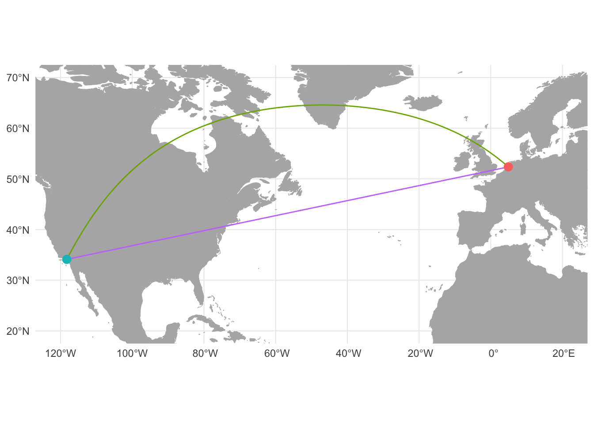

Great Circles with R
Three methods with sp and sf
rstats
rspatial
Creating great circles in R with the sp and sf packages
In 1569 the Flemish cartographer and mathematician Gerardus Mercator published a new world map under the title “New and more complete representation of the terrestrial globe properly adapted for use in navigation.” The title of the map points to Mercator’s main claim for its usefulness, which he expounded upon in the map’s legends. Mercator presented his map as not only an accurate representation of the known world, but also as a particularly useful map for the purposes of navigation. As described in the third legend, Mercator aimed to maintain conformity to the shape of land masses even towards the poles and to have straight lines on the map accurately represent directionality. To achieve his goals Mercator used a projection in which lines of longitude and latitude were made perpendicular at all values by increasing the distance between degrees of latitude as they reach the pole.1 Mercator’s projection had the benefit that straight lines drawn on the map are rhumb lines, lines of constant bearing that pass every degree of longitude at the same angle. Theoretically this simplified oceanic navigation; a ship captain could draw a straight line from one port to another, calculate the bearing, and maintain that bearing along the voyage. However, 16th-century navigators used magnetic courses and not longitude and latitude values as Mercator’s map assumed.2 An accurate means to measure longitude at sea was only discovered in the second half of the 18th century with the development of the sextant and later the marine chronometer.3

The Mercator projection was designed with certain uses in mind. Mercator’s emphasis on perpendicular lines of longitude and latitude and the equivalence of straight lines and rhumb lines were meant to simplify navigation and have recently proved useful for online mapping services. However, the stretching of latitudes towards the poles distorts the size of land masses, making those closer to the poles appear larger than those near the equator. The stress on rhumb lines in Mercator’s map also highlights the difference between lines of constant bearing (rhumb or loxodrome lines) and the shortest distance between two points (great circles). Due to Earth’s ellipsoidal nature, the shortest distance between two points is not necessarily a straight line. For instance, to fly from Los Angeles to Amsterdam, one would not want to fly in a straight line of constant bearing at 78 degrees. Instead, you would want to make an arc to the north to take advantage of the ellipsoidal shape of the Earth. By flying along the great circle from Los Angeles to Amsterdam one would travel 1120 kilometers less than flying along the rhumb line.
Great circles with R
In Geocoding with R and Introduction to GIS with R I demonstrated different ways to make maps that showed the sources and destinations of letters sent to the sixteenth-century merchant Daniel van der Meulen in 1585. This post will show how to create great circle lines to connect the sources and destinations of the letters. There are a number of resources on making great circles with R, and each resource uses slightly different methods.4 The diversity of methods to get the same or similar result is both one of the more interesting and one of the more frustrating parts of coding. Here, I will show how to create great circles as a SpatialLinesDataFrame from the sp package, as well as two different methods using the sf package. The results of the three methods will be very similar, and the ability to convert between objects used by the sp and sf packages means that they can be used interchangeably. However, showing multiple methods will help to explicate the process of creating lines from longitude and latitude data and turning them into great circles. You can find the data and the R script that goes along with this post on GitHub.
sp and sf both depend upon external packages to calculate the shortest distance between two points of longitude and latitude data. Creating a SpatialLinesDataFrame of great circles is done through the geosphere package, while the calculations for sf objects depend upon the lwgeom package.5 Despite the different sources for the calculations, the results produced by geosphere and lwgeom are all but equivalent. Internally, both the gcIntermediate() function from geosphere and st_segmentize() function from sf use a spherical model of the Earth to calculate great circles. Therefore, the path drawn by the two functions are not as exact as the distance calculations from the two packages, which use more accurate ellipsoidal models of the Earth. The primary difference between gcIntermediate() and st_segmentize() is not the internal calculations, but how they are implemented in R. Both functions work by breaking a straight line with two points into a segmented line, with the number of breaks defined by the user. gcIntermediate() calculates segments based on a specified number of breaks. On the other hand, st_segmentize() uses a maximum distance argument to calculate the number of segments. This means that whereas gcIntermediate() results in the same number of points along the great circle for each line irrespective of distance, st_segmentize() creates segments of relatively equal distance but with the amount of segments in a line varying by distance.
Let’s start by loading the packages and data that we will use to make the great circles. To wrangle the data into the correct formats I will use the tidyverse. We need to load the sp and geosphere packages to make a SpatialLinesDataFrame of great circles and the sf package for the latter two methods. Internally, st_segmentize() uses the lwgeom package, but we will not use the package directly, and so while it is necessary to have lwgeom installed, we do not need to load it. Lastly, I will use the rnaturalearth package to provide some background maps. The data that I will be using is again the letters sent to Daniel van der Meulen in 1585 along with the latitude and longitude values of the cities within his correspondence network at this time. We can also load the countries map from rnaturalearth as both a Spatial and sf object.
# Load packages
library(tidyverse)
library(sp)
library(geosphere)
library(sf)
library(rnaturalearth)
# Load the data
letters <- read_csv("data/correspondence-data-1585.csv")
locations <- read_csv("data/locations.csv")
# Load the background maps
countries_sp <- ne_countries(scale = "medium")
countries_sf <- ne_countries(scale = "medium", returnclass = "sf")Preparing the data
The basis for all three methods of creating great circles is a data frame of routes — a data frame with a single row for each unique connection between a source and a destination — which we can then join to the longitude and latitude values in the locations data frame. The letters data contains 114 rows with each row containing a letter. We can calculate the number of letters sent along each unique route with a group_by() and count() pipeline in which we group the letters that have the same source and destination. We then want to ungroup() the data frame to prevent the group attribute from interfering with any code further down the line. The final step is to arrange the rows by the count column, which has been named “n” by count(). This ensures that the routes with more letters sent across them will be drawn later in the plot, making them more visible in the maps.
# Create data frame of routes and count for letters per route
routes <- letters %>%
group_by(source, destination) %>%
count() %>%
ungroup() %>%
arrange(n)
# Print routes
routes# A tibble: 15 × 3
source destination n
<chr> <chr> <int>
1 Amsterdam Bremen 1
2 Antwerp Middelburg 1
3 Dordrecht Haarlem 1
4 Emden Bremen 1
5 Haarlem Middelburg 1
6 Haarlem The Hague 1
7 Hamburg Bremen 1
8 Het Vlie Bremen 1
9 Lisse Delft 1
10 Antwerp The Hague 2
11 Haarlem Bremen 2
12 Venice Haarlem 2
13 Antwerp Haarlem 5
14 Haarlem Delft 26
15 Antwerp Delft 68The routes data shows that there are 15 unique source to destination combinations within the letters data. A glimpse at routes shows that the majority of letters that Daniel received in 1585 — 68 letters — were sent from Antwerp to Delft, while a sizable number of letters were sent from Haarlem to Delft.6 Daniel received letters along other routes much less frequently. With the routes identified, and already possessing the longitude and latitude of the end points for the routes in the locations data frame, we can now move on to creating the great circles between these sets of points.
Great circles with geosphere and sp
Let’s start by creating great circles as a SpatialLinesDataFrame from the sp package. Before the recent growth of the sf package, the gcIntermediate() function from the geosphere package represented the main method for creating great circles. I have tried to simplify the process, making it possible to create a SpatialLinesDataFrame in four steps.
The gcIntermediate() function provides one of the easiest methods for transforming coordinates data into spatial lines. A single step creates a SpatialLines object and calculates the great circle. As we will see below, the sf methods split these into two steps. The gcIntermediate() function takes two sets of longitude and latitude coordinates, one for the beginning point of the line and one for the end point. The coordinates can be supplied in the form of either a data frame or a matrix. Here, I will supply the coordinates in a data frame, since our longitude and latitude values are already in this format. We can identify the longitude and latitude values for the sources of the routes by joining locations to routes by the “source” column. Since we only want the longitude and latitude values for the gcIntermediate() function, we select() the “lon” and “lat” columns — the names of the columns that contain longitude and latitude values — creating a sources_tbl with two columns and the same amount of rows as the routes data. Joining locations to routes by “destination” creates an equivalent destinations_tbl.
# tibble of longitude and latitude values of sources
sources_tbl <- routes %>%
left_join(locations, by = c("source" = "place")) %>%
select(lon, lat)
# tibble of longitude and latitude values of destinations
destinations_tbl <- routes %>%
left_join(locations, by = c("destination" = "place")) %>%
select(lon, lat)The next step is to decide on the number of segments for the line and the type of output we want. In this example, I choose 50 breaks, which is more than enough for the routes that we are drawing. The end result will actually have 52 segments, because I want to include the start and end points within the line by setting the addStartEnd to TRUE.7 Lastly, in order to have the output be a Spatial object, we need to set the sp argument to TRUE.8
# Great circles as a SpatialLines object
routes_sl <- gcIntermediate(sources_tbl, destinations_tbl,
n = 50, addStartEnd = TRUE,
sp = TRUE)Warning in showSRID(uprojargs, format = "PROJ", multiline = "NO", prefer_proj
= prefer_proj): Discarded datum Unknown based on WGS84 ellipsoid in Proj4
definitionLet’s investigate the object that we have created with the gcIntermediate() function. You will not want to print routes_sl to the console, as this will print out fifteen matrices with 52 rows each, but we can use other methods to look at the object. routes_sl is a Spatial object of class SpatialLines. The different forms of data within Spatial objects are contained in slots, which can be identified with slotNames(). The lines slot contains the coordinates of the routes produced by gcIntermediate(). The gcIntermediate() function also added a coordinate reference system and set it to longitude and latitude coordinates on the WGS84 ellipsoid, equivalent to EPSG 4326.
# Class of routes_sl
class(routes_sl)[1] "SpatialLines"
attr(,"package")
[1] "sp"# Slots in routes_sl
slotNames(routes_sl)[1] "lines" "bbox" "proj4string"# CRS of routes_sl
routes_sl@proj4stringCoordinate Reference System:
Deprecated Proj.4 representation: +proj=longlat +ellps=WGS84 +no_defs
WKT2 2019 representation:
GEOGCRS["unknown",
DATUM["Unknown based on WGS84 ellipsoid",
ELLIPSOID["WGS 84",6378137,298.257223563,
LENGTHUNIT["metre",1],
ID["EPSG",7030]]],
PRIMEM["Greenwich",0,
ANGLEUNIT["degree",0.0174532925199433],
ID["EPSG",8901]],
CS[ellipsoidal,2],
AXIS["longitude",east,
ORDER[1],
ANGLEUNIT["degree",0.0174532925199433,
ID["EPSG",9122]]],
AXIS["latitude",north,
ORDER[2],
ANGLEUNIT["degree",0.0174532925199433,
ID["EPSG",9122]]]] The inclusion of a coordinate reference system makes routes_sl a truly geospatial object that can be plotted on our background map, though it does not yet possess any attribute data about the names of the locations or the number of letters sent along each route.
# Make bbox of countries_sp the same as routes_sl
countries_sp@bbox <- bbox(routes_sl)
# Plot map
par(mar = c(1, 1, 3, 1))
plot(countries_sp, col = gray(0.8), border = gray(0.7),
main = "SpatialLines great circles")Warning in wkt(obj): CRS object has no commentplot(routes_sl, col = "dodgerblue", add = TRUE)At this point, the output is not hugely informative. However, we can confirm that the process of making great circles worked by observing the curvatures of the lines. Notice that the amount of curvature differs according to distance and the bearing of the line.
We can add the attribute data for the lines and create a SpatialLinesDataFrame object by combining routes_sl and the routes data frame through the SpatialLinesDataFrame() function. There is no need to worry about linking the lines data to the correct row in routes, because routes_sl contains a lines ID attribute that corresponds to the row numbers of sources_tbl and destinations_tbl, which were derived from routes.9
# Great circles as a SpatialLinesDataFrame object
routes_sldf <- SpatialLinesDataFrame(routes_sl, data = routes)The result of SpatialLinesDataFrame() is a complete Spatial object that contains a CRS, attribute data in the data slot, and great circle lines in the lines slot. It is now possible to plot routes_sldf and distinguish the lines by the number of letters sent along each route. The easiest way to show this in a base plot is by adjusting the line width of the great circles by a chosen formula. In this case, I take the square route of the number of letters and add 0.25 to get the maximum and minimum line width to a reasonable size.
countries_sp@bbox <- bbox(routes_sldf)
# Map with SpatialLinesDataFrame object
par(mar = c(1, 1, 3, 1))
plot(countries_sp, col = gray(0.8), border = gray(0.7),
main = "SpatialLinesDataFrame great circles")Warning in wkt(obj): CRS object has no commentplot(routes_sldf,
lwd = sqrt(routes_sldf$n/3) + 0.25,
col = "dodgerblue",
add = TRUE)Great circles with sf
There is no straightforward way, no single function, to create great circles from longitude and latitude data with the sf package that is reminiscent of gcIntermediate(). With sf the creation of great circles is a two-step process. First, we need to create lines or objects with a geometry of LINESTRING, and then it will be possible to convert the straight line into a great circle with st_segmentize(). The first transformation is the trickier of the two. As I have shown previously, you can create an sf object with POINT geometry through the st_as_sf() function, but there is no equivalent function for creating lines. Here, I will show two different methods for creating lines and then great circles with sf. The first method will convert the routes data to an sf object of POINT geometry and take advantage of the sf package’s ability to use dplyr functions to create lines through a group_by() and summarise() pipeline. The second method vectorizes the creation of a single LINESTRING feature through a for loop. The resulting sf object of great circles will be essentially identical.
Great circles with sf: tidy method
When I first attempted to create great circles with the sf package, I was not sure how to proceed. In fact, for many months I used the above method from geosphere and then converted the SpatialLinesDataFrame to an sf object with st_as_sf(). I discovered this first method for creating great circles with sf when I came to the realization that the form of the data in the routes data frame was problematic. It obviously makes sense from a perspective of data entry to have a row for each letter with a source and destination. However, this results in two columns that represent a similar type of data of place names. When coordinate data is added, you end up with two sets of longitude and latitude variables. In an sf object this translates to two separate geometry columns, which is possible but problematic.
Once I identified the problem, I could find a solution in the form of the functions in the tidyr package and the transformation of routes from a “wide” form with a “source” and “destination” column in the same row to a “long” form in which the source and destination of each letter are in separate rows. The “long” format of the routes data frame with a single “place” column makes it possible to add a single set of longitude and latitude data and then convert to an sf object. From this format we can transform an sf object with POINT geometry to LINESTRING geometry through sf’s integration with dplyr.10
Let’s see how this works in practice. Before we begin though, we need to make a slight change to routes to add an “id” column. This will enable us to keep track of the relationship between the sources and destinations and will be used later to group the routes together. We can do this with the very helpful rowid_to_column() function from the tibble package, which even places the “id” column at the start of the data frame.
# Create id column to routes
routes_id <- rowid_to_column(routes, var = "id")With this done, the first step is to transform routes_id into a “long” format with the use of gather(). The related gather() and spread() functions are almost magical when you can get them to do what you want, but this also makes them somewhat tricky to use.11 gather() combines variables and transforms them into values. The gather() function has three main arguments: key, value, and ... to choose the columns to keep or modify. The values passed to the key and value arguments provide the names for two new columns to be created by the gather() function. They can be anything you choose, but assigning descriptive names makes it easier to understand what the function is doing. You can think of the key argument as the name for the column whose values are currently column names. The key essentially identifies the “type”. The value argument is the name of the variable whose values are contained within the columns that are spread apart. The ... argument is used to demarcate the columns to either be used by gather() or to specify which columns you want to keep as is and thus make longer. This uses the same grammar as select() with -variable_name for columns that you want to be left alone.
In our example, we want to turn the “source” and “destination” variables or columns into values that identify whether a place is a source or destination. Here, I choose to name the key “type” and the value “place”, which aligns with the nomenclature used in the locations data. To make the function work properly, we need to choose the right columns for gather() to work upon. In this case, there are two possibilities. We can either tell gather() to use the “source” and “destination” columns or to leave “id” and “n” alone with a - before these column names. Here, I do the former.12
# Transform routes to long format
routes_long <- routes_id %>%
gather(key = "type", value = "place", source, destination)
# Print routes_long
routes_long# A tibble: 30 × 4
id n type place
<int> <int> <chr> <chr>
1 1 1 source Amsterdam
2 2 1 source Antwerp
3 3 1 source Dordrecht
4 4 1 source Emden
5 5 1 source Haarlem
6 6 1 source Haarlem
7 7 1 source Hamburg
8 8 1 source Het Vlie
9 9 1 source Lisse
10 10 2 source Antwerp
# … with 20 more rowsBecause we performed the gather() function on two columns, routes_long possesses twice as many rows as routes. routes_long has two new columns corresponding to the names we gave them in the key and values arguments, while the “id” and “n” values have essentially been doubled such that the same values are associated with both a source and destination “type”. Now that we have a single column with place names, we can add the longitude and latitude values of the places through a left join.
# Add coordinate values
routes_long_geo <- left_join(routes_long, locations, by = "place")With routes_long_geo we now have the data in the correct format to create an sf object with POINT geometry and a CRS through the st_as_sf() function. Let’s create the object and then see what it looks like.
# Convert coordinate data to sf object
routes_long_sf <- st_as_sf(routes_long_geo,
coords = c("lon", "lat"),
crs = 4326)
# Print routes_long_sf
routes_long_sfSimple feature collection with 30 features and 4 fields
Geometry type: POINT
Dimension: XY
Bounding box: xmin: 3.610998 ymin: 45.44085 xmax: 12.31552 ymax: 53.55108
Geodetic CRS: WGS 84
# A tibble: 30 × 5
id n type place geometry
* <int> <int> <chr> <chr> <POINT [°]>
1 1 1 source Amsterdam (4.895168 52.37022)
2 2 1 source Antwerp (4.402464 51.21945)
3 3 1 source Dordrecht (4.690093 51.8133)
4 4 1 source Emden (7.20601 53.3594)
5 5 1 source Haarlem (4.646219 52.38739)
6 6 1 source Haarlem (4.646219 52.38739)
7 7 1 source Hamburg (9.993682 53.55108)
8 8 1 source Het Vlie (5.183333 53.3)
9 9 1 source Lisse (4.557483 52.25793)
10 10 2 source Antwerp (4.402464 51.21945)
# … with 20 more rowsFrom this point on, we are able to use sf’s dplyr integration to convert from a POINT geometry to MULTIPOINT and then LINESTRING. We can perform the former by grouping routes_long_sf by the “id” column and summarizing the points into a MULTIPOINT geometry.13 The sf implementation of summarise() includes a do.union argument. With do.union set to TRUE, the default, summarise() will try to resolve internal boundaries, but it can also change the order of points. Therefore, we will set do.union to FALSE, which uses st_combine() to more simply combine geometries in a manner similar to c (). The latter transformation from MULTIPOINT to LINESTRING involves st_cast() and takes advantage of the fact that internally MULTIPOINT and LINESTRING are derived from the same type of data, making it possible to convert back and forth between the two geometries without any loss of data. Here I will do all of this in a single pipeline, though you could do it step-by-step to see the multiple conversions that are taking place.
# Convert POINT geometry to MULTIPOINT, then LINESTRING
routes_lines <- routes_long_sf %>%
group_by(id) %>%
summarise(do_union = FALSE) %>%
st_cast("LINESTRING")
# Print routes_lines
routes_linesSimple feature collection with 15 features and 1 field
Geometry type: LINESTRING
Dimension: XY
Bounding box: xmin: 3.610998 ymin: 45.44085 xmax: 12.31552 ymax: 53.55108
Geodetic CRS: WGS 84
# A tibble: 15 × 2
id geometry
<int> <LINESTRING [°]>
1 1 (4.895168 52.37022, 8.801694 53.0793)
2 2 (4.402464 51.21945, 3.610998 51.4988)
3 3 (4.690093 51.8133, 4.646219 52.38739)
4 4 (7.20601 53.3594, 8.801694 53.0793)
5 5 (4.646219 52.38739, 3.610998 51.4988)
6 6 (4.646219 52.38739, 4.3007 52.0705)
7 7 (9.993682 53.55108, 8.801694 53.0793)
8 8 (5.183333 53.3, 8.801694 53.0793)
9 9 (4.557483 52.25793, 4.357068 52.01158)
10 10 (4.402464 51.21945, 4.3007 52.0705)
11 11 (4.646219 52.38739, 8.801694 53.0793)
12 12 (12.31552 45.44085, 4.646219 52.38739)
13 13 (4.402464 51.21945, 4.646219 52.38739)
14 14 (4.646219 52.38739, 4.357068 52.01158)
15 15 (4.402464 51.21945, 4.357068 52.01158)We have successfully created an sf object with lines. In addition to the change in geometry type, we can see that the number of rows has been halved and returned to the original length of routes_id. However, in doing this, we lost the data on the name of the source and destination of the lines, as well as the number of letters sent along the route. This occurred when we grouped routes_long_sf by the “id” column, leaving other non-geometry columns to be silently dropped. We can re-add the attribute data by joining routes_lines to the original routes_id data frame, using the “id” column to perform the join. This work flow of grouping and then joining by “id” is why we needed to create the column in the first place.
# Join sf object with attributes data
routes_lines <- left_join(routes_lines, routes_id, by = "id")Now that the geometry of the sf object is LINESTRING, creating a great circle with st_segmentize() is straight forward. The only decision you have to make is the maximum distance for the length of a segment. The maximum distance argument can either be the number of meters for the maximum segment or an object from the units package, which makes it possible to use a more sensible unit for this argument such as kilometers.14 In this case, I will use the set_units function from the units package and set the maximum length to 20 kilometers.15
# Convert rhumb lines to great circles
routes_sf_tidy <- routes_lines %>%
st_segmentize(units::set_units(20, km))With routes_sf_tidy we have reached our goal, an sf object with great circle lines. We can confirm the changes made by st_segmentize() both visually and by looking at the number of coordinates or points in routes_sf_tidy compared to routes_lines. Where routes_lines has 30 set of coordinates — two for each line — routes_sf_tidy has nrow(st_coordinates(routes_sf_tidy)) as a result of st_segmentize().
# Compare number of points in routes_lines and routes_sf_tidy
nrow(st_coordinates(routes_lines))[1] 30nrow(st_coordinates(routes_sf_tidy))[1] 193We can visualize the difference between the rhumb lines of routes_lines and the great circles of routes_sf_tidy by plotting them on the same map. Because the lines in this example are relatively short, the differences will be fairly minimal and even imperceptible in some cases. Here, I plot the great circles in black on top of the rhumb lines in magenta to highlight where the differences are visible. The most perceptible difference is the route from Venice to Haarlem. The magenta rhumb lines are also partially visible in the routes to Bremen. Routes over shorter distances such as those between Antwerp and Zeeland or Holland are more similar and the appearance of the magenta rhumb lines are less perceptible.
# Rhumb lines vs great circles
ggplot() +
geom_sf(data = countries_sf, fill = gray(0.8), color = gray(0.7)) +
geom_sf(data = routes_lines, color = "magenta") +
geom_sf(data = routes_sf_tidy) +
coord_sf(xlim = c(2, 14), ylim = c(45, 54), datum = NA) +
ggtitle("Rhumb lines vs Great circles") +
theme_minimal()We can also compare the output of gcIntermediate and st_segmentize(). The use of a maximum length of a segment by st_segmentize() instead of the number of segments is the main differentiation between st_segmentize() and gcIntermediate(). The exact coordinates along which the great circles are drawn will necessarily differ between the two functions. In practice, the differences are likely to be unimportant, and in a map like the one we are creating here, the differences between the two sets of great circles will be imperceptible. The limited extent of the difference between the two functions can be seen by plotting routes_sldf and routes_sf_tidy on the same interactive map using the mapview package. This makes it possible to zoom in on the lines and see where they do differ, such as the line between Venice and Haarlem. The differences that are visible are on the scale of meters, and this is without optimizing the alignment for the choices of the number of segments and maximum length of a segment.
# Interactive comparison of gcIntermediate and st_segmentize
library(mapview)
mapview(routes_sldf, color = "magenta") +
mapview(routes_sf_tidy, color = "black")Great circles with sf: for loop method
The above method for creating great circles using sf highlights the integration of sf into the tidyverse, but there are always more than one path to answer a question with code. As I learned more about sf objects, I got interested in more directly creating an sf object with a geometry type of LINESTRING from longitude and latitude data. As with the tidy method, the biggest challenge came from creating LINESTRING features and not in turning rhumb lines into great circles. The method I came up with essentially vectorizes the creation of a single LINESTRING feature through the use of a for loop. This uses a similar step-by-step creation of an sf object — from an sfg, to an sfc object, and then to an sf object — that I have shown in Exploration of Simple Features for R.16
Let’s start by building a single feature with a geometry of LINESTRING using coordinates from Venice and Haarlem to outline the process. The st_linestring() function takes a matrix of two or more sets of coordinates to create an sfg object with a geometry of class LINESTRING. We can construct the matrix of coordinates by row binding two vectors — created using c() — of the longitude and latitude values for Venice and Haarlem.
# Create a line between Venice and Haarlem
st_linestring(rbind(c(12.315515, 45.44085), c(4.646219, 52.38739)))LINESTRING (12.31551 45.44085, 4.646219 52.38739)It is this process that we want to repeat for each of the 15 routes found in routes. A first instinct might be to create a matrix of the coordinates of all of the routes, but this results in a single line connecting the coordinates. Instead, what we need to do is create 15 matrices that each contain the coordinates for the source and destination of a single route. In other words, we want to take the longitude and latitude of both the source and destination from the first row of routes, bind them together into a 2x2 matrix, and then repeat the process for the second row and so forth. This is the realm of the for loop.
Before getting into the mechanics of the for loop, we have to get the data into a format that is similar to the vectors used to create the line between the coordinates of Venice and Haarlem. A similar workflow to that we used above to prepare the data for the gcIntermediate() function gets us what we are looking for. In this case though, we need matrices of source coordinates and destination coordinates. We could either transform sources_tbl and destinations_tbl into matrices with as.matrix() or rerun the code used to create them and use as.matrix() at the end of the pipeline. Here, I do the latter for greater transparency.
# Matrix of longitude and latitude values of sources
sources_m <- routes %>%
left_join(locations, by = c("source" = "place")) %>%
select(lon:lat) %>%
as.matrix()
# Matrix of longitude and latitude values of destinations
destinations_m <- routes %>%
left_join(locations, by = c("destination" = "place")) %>%
select(lon:lat) %>%
as.matrix()Now we can deal with creating a for loop.17 There are three components of a for loop: the creation of an object that will contain the output of the for loop, the sequence along which to run the for loop, and the actual code that will be looped. Let’s break this down one part at a time. The goal is to build an object that contains a 2x2 matrix for each route. We should start out by creating an empty vector of the appropriate form and length to hold the output of the for loop. We can do this by creating a list that has a length equal to the number of rows in the routes data frame with the vector() function: linestrings_sfg <- vector(mode = "list", length = nrow(routes)).
The second step is to define a sequence along which the function will loop by creating a variable that holds the place in the sequence and defining the sequence itself. The conventional variable used in a for loop is i. The sequence itself will be similar, if not identical, to the formula used to create the output object. In this case, we want a sequence from 1 — the first row — to 15 — the number of unique routes in our data, which we can determine programmatically by 1:nrow(routes). Thus, the sequence of the for loop is for (i in 1:nrow(routes)) with for acting to choose the type of loop and the formula within the parentheses defining the sequence.
Finally, we are able to construct the code to create the desired output. We already know the inputs, output, and functions to use, which we can summarize as follows: linestrings_sfg <- st_linestring(rbind(sources_m, destinations_m)).
However, we do not want to run this code, as it would create a single sfg object connecting all of the points. Instead, we can get our desired output by using the sequence variable to subset both the output list and input matrices in the code. For each iteration of the loop, we want the output to fill one component of the linestrings_sfg list, which we can access with [[i]]. Concerning the inputs, we want to select one row of coordinates from sources_m and one row of coordinates from destinations_m for each iteration. This is possible with the matrix subsetting method of [row, column]. Thus, we can access the sequence of rows with sources_m[i, ] and destinations_m[i, ].
Putting the above together, we get a complete for loop that creates linestrings_sfg, a list of 15 sfg objects.
# Create empty list object of length equal to number of routes
linestrings_sfg <- vector(mode = "list", length = nrow(routes))
# Define sequence and body of loop
for (i in 1:nrow(routes)) {
linestrings_sfg[[i]] <- st_linestring(rbind(sources_m[i, ],
destinations_m[i, ]))
}We can check that the for loop worked by looking at the contents of one value from the list with [[]] subsetting.
# geometry of a single route
linestrings_sfg[[2]]LINESTRING (4.402464 51.21945, 3.610998 51.4988)The next step is to create an sfc object by transforming the list of sfg objects into a geometry column with st_sfc(). An sfc object is referred to as a geometry set and is itself a list. It is at this step that the lines become geospatial through the addition of a CRS. At this point, we can also convert the rhumb lines to great circles by using st_segmentize() in the same manner as above in the pipeline.
# sfc object of great circles
linestrings_sfc <- st_sfc(linestrings_sfg, crs = 4326) %>%
st_segmentize(units::set_units(20, km))
# Print linestrings_sfc
linestrings_sfcGeometry set for 15 features
Geometry type: LINESTRING
Dimension: XY
Bounding box: xmin: 3.610998 ymin: 45.44085 xmax: 12.31552 ymax: 53.55108
Geodetic CRS: WGS 84
First 5 geometries:LINESTRING (4.895168 52.37022, 5.135538 52.4182...LINESTRING (4.402464 51.21945, 4.205503 51.2897...LINESTRING (4.690093 51.8133, 4.67923 51.95682,...LINESTRING (7.206009 53.3594, 7.406604 53.32556...LINESTRING (4.646219 52.38739, 4.514556 52.2768...linestrings_sfc is a fully geospatial object. The truncated print out of the coordinates for the first five features indicates that the lines have been segmentized and turned into great circles. The final step is to add the attribute data and convert the sfc object to a sf object with st_sf() and the routes data. The st_sf() function effectively adds linestrings_sfc to routes as a geometry column and converts the whole object to class sf and data.frame. Because we have not done anything to rearrange the rows of routes the data will line up correctly.
# Create sf object from data frame and sfc geometry set
routes_sf <- st_sf(routes, geometry = linestrings_sfc)
# Print routes_sf
routes_sfSimple feature collection with 15 features and 3 fields
Geometry type: LINESTRING
Dimension: XY
Bounding box: xmin: 3.610998 ymin: 45.44085 xmax: 12.31552 ymax: 53.55108
Geodetic CRS: WGS 84
First 10 features:
source destination n geometry
1 Amsterdam Bremen 1 LINESTRING (4.895168 52.370...
2 Antwerp Middelburg 1 LINESTRING (4.402464 51.219...
3 Dordrecht Haarlem 1 LINESTRING (4.690093 51.813...
4 Emden Bremen 1 LINESTRING (7.206009 53.359...
5 Haarlem Middelburg 1 LINESTRING (4.646219 52.387...
6 Haarlem The Hague 1 LINESTRING (4.646219 52.387...
7 Hamburg Bremen 1 LINESTRING (9.993682 53.551...
8 Het Vlie Bremen 1 LINESTRING (5.183333 53.3, ...
9 Lisse Delft 1 LINESTRING (4.557483 52.257...
10 Antwerp The Hague 2 LINESTRING (4.402464 51.219...Though they were produced using very different methods, routes_sf_tidy and routes_sf are identical objects apart from the presence of an “id” column in routes_sf_tidy.
Now that we have attribute and spatial data for the great circles of the routes of the letters received by Daniel in 1585, we can create a map that uses color to distinguish the amount of letters sent along each route. Because they are essentially identical, you could use either routes_sf_tidy or routes_sf to create this map. The code to create a ggplot2 map using geom_sf() is very similar to that made above to compare routes_lines and routes_sf_tidy. In this case, though, we want the color of the lines to differ according to the “n” variable. In addition, I change the color palette used for the lines to the viridis palette on a continuous scale, hence the _c at the end of the function. I also label the color legend as “Letters”.
# ggplot2 of great circle routes
ggplot() +
geom_sf(data = countries_sf, fill = gray(0.8), color = gray(0.7)) +
geom_sf(data = routes_sf, aes( color = n)) +
scale_color_viridis_c() +
labs(color = "Letters", title = "Great circles with sf") +
coord_sf(xlim = c(2, 14), ylim = c(45, 54), datum = NA) +
theme_minimal()Resources
- Great circles with
sp - Great circles with
sf- Martin Hadley – Great circles with sf and leaflet - Juan Mayorga – Mapping the Global Network of Transnational Fisheries
Footnotes
As Mercator explained in legend 6 the distortion of distance is infinite at the poles such that they cannot actually be represented on the map.↩︎
Joaquim Alves Gaspar, “Revisiting the Mercator World Map of 1569: an Assessment of Navigational Accuracy,” The Journal of Navigation 69 (2016): 1183–1196.↩︎
Roy Iliffe, “Science and the Voyages of Discovery,” in The Cambridge History of Science: Eighteenth-Century Science, ed. Roy Porter (Cambridge: Cambridge University Press, 2003).↩︎
See the resources section at the end of the post for a list of posts on creating great circles in R.↩︎
Previous to version 0.6,
sfalso used thegeospherepackage to calculate distance and create great circles with geographic coordinates. The change to use thelwgeompackage, which is an implementation of the liblwgeom library, alignssfwith the methods used by PostGIS.↩︎This is hardly surprising. Until the fall of 1585, Daniel’s family mainly resided in Antwerp, and he was serving as a representative to the States General, which was meeting at Delft.↩︎
You can also set whether you want the line to be broken at the International Date Line, but the argument is superfluous in this case.↩︎
Setting
sp = FALSE, which is the default, returns a list of matrices containing the latitude and longitude values for the path along the great circle of each route.↩︎Even if you set the
Match.IDargument toFALSE, the lines and attribute data would be correctly aligned as long as you do not change the order of theroutesdata frame after creatingsources_tblanddestinations_tbl.↩︎This method is similar to the original workflow shown by Martin Hadley in his post on Great circles with sf and leaflet.↩︎
For more information on
gather()andspread()see Wickham, R for Data Science, Chapter 12 and Joyce Robbins’s excellent tutorial ongather().↩︎It is not necessary to place “type” and “place” in quotations, but doing so more clearly identifies these as strings and not as names of already extant objects.↩︎
You do not need to include the geometry column in the
group_by()function. The geometry column is sticky and will remain attached to thesfobject unless explicitly removed.↩︎The
unitspackage is imported along withsf, so if you havesf, you should also have theunitspackage.↩︎The equivalent code without the
unitspackage would best_segmentize(routes_lines, 20000).↩︎See the same post for a more in depth treatment of the vocabulary of simple feature objects.↩︎
If you are familiar with for loops in R, you can skip this discussion of the steps to build the for loop.↩︎